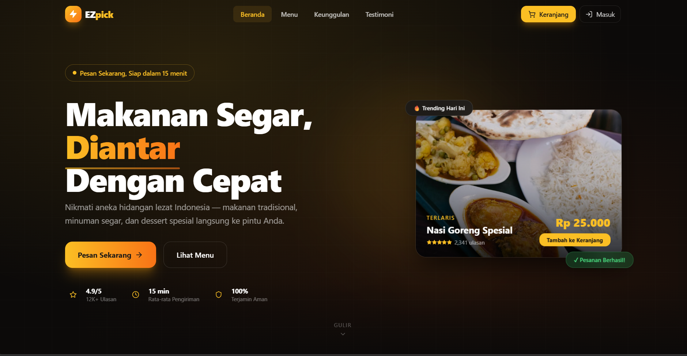
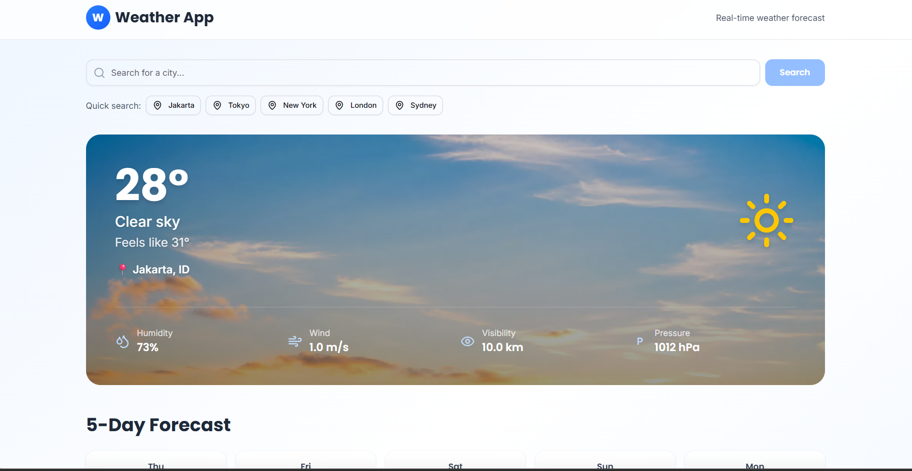
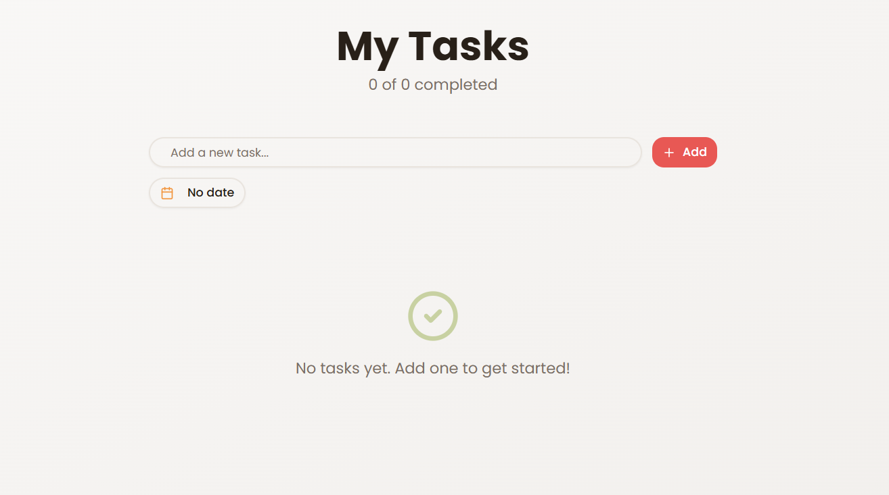

KEMAMPUAN
Keahlian
Teknologi dan tools yang saya kuasai untuk menciptakan solusi terbaik
UI/UX & FRONT END DEVELOPER
Menciptakan solusi digital yang inovatif, mendesain antarmuka pengguna yang menarik, dan membangun frontend web dengan performa tinggi dan responsif.
Perjalanan akademis yang membentuk fondasi keahlian saya
SMK Negeri 2 Surakarta
Mempelajari administrasi infrastruktur jaringan komputer, instalasi OS, perakitan PC, keamanan siber dasar, serta pemecahan masalah hardware dan software.
Universitas Duta Bangsa
Fokus pada rekayasa perangkat lunak dan pengembangan web modern. Aktif mempelajari tren pemrograman terbaru untuk menghasilkan solusi digital yang solutif.
Jejak karir profesional dan pengalaman yang berharga
Universitas Duta Bangsa
Setelah lulus SMK, saya memulai kuliah di Universitas Duta Bangsa jurusan Teknik Informatika. Di semester pertama, saya mulai tertarik dengan dunia pemrograman. Belajar HTML dan CSS dasar melalui kursus online, dan mulai membuat website sederhana pertama saya.
Frontend & Backend Dev
Melanjutkan ke semester 3-4, saya mulai mendalami JavaScript dan React. Membuat proyek-proyek kecil seperti kalkulator web dan aplikasi to-do list. Mulai belajar Flutter untuk pengembangan mobile, dan Flask untuk backend sederhana. Git menjadi teman setia dalam mengelola kode.
UI/UX & Mobile Dev
Di semester 5, saya semakin tertarik pada desain antarmuka pengguna. Mengembangkan skill di bidang UI/UX dengan fokus pada pengalaman pengguna yang intuitif. Membuat beberapa prototipe aplikasi mobile dengan Flutter dan website responsif dengan React. Mulai menggabungkan backend Flask dengan frontend yang menarik.
Fullstack & UI/UX
Sekarang di semester 6, saya sedang mengerjakan proyek akhir kuliah yang menggabungkan semua skill yang telah dipelajari. Fokus pada pengembangan aplikasi web dan mobile yang user-friendly. Bersiap untuk memasuki dunia kerja sebagai developer dengan spesialisasi UI/UX.
Teknologi dan tools yang saya kuasai untuk menciptakan solusi terbaik
Beberapa proyek terbaik yang telah saya kerjakan

Aplikasi web interaktif pengambil keputusan acak dinamis yang mempermudah pengguna memilih opsi secara cepat dengan antarmuka yang bersih.

Aplikasi pelacak cuaca responsif dengan integrasi API cuaca eksternal untuk menampilkan kondisi dan perkiraan cuaca real-time di seluruh dunia.

Aplikasi manajemen tugas personal untuk mencatat agenda harian dengan fitur penyimpanan data lokal (Local Storage) dan tampilan modern.
Tertarik berkolaborasi? Jangan ragu untuk menghubungi saya
vhereygapro@gmail.com
+62 813 9079 2516
Surakarta, Indonesia